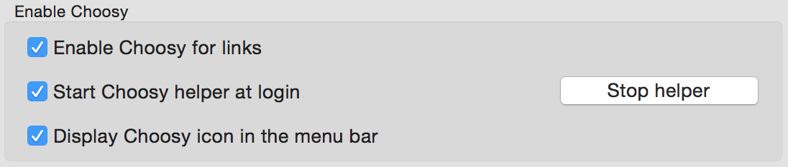
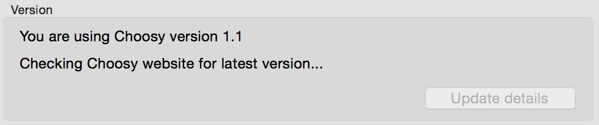
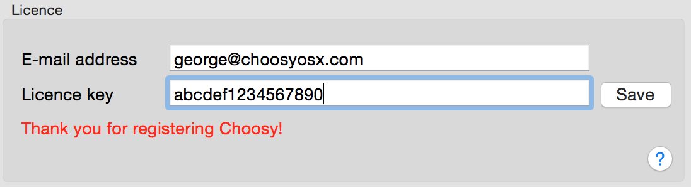

Choosy Help: General settings
This page describes the settings on Choosy's “General” tab. To find these settings
open System Preferences, click on the Choosy icon and then click on the General tab.

The general settings are grouped into three sections:
- Enable Choosy
- Version
- Licence
Enable Choosy
This section contains settings that allow you to enable and disable various aspects of Choosy.

- Enable Choosy for links
-
This checkbox determines whether or not Choosy will be used when clicking on links to websites.
If you disable this option whichever browser is at the top of your Choosy browsers list (see
browser settings) will be set as your default browser.
If you enable this option then Choosy will be used whenever the default browser would normally
be used.
- Enable Choosy for HTML files
-
This checkbox determines whether or not Choosy will be used when opening HTML files from the
Finder. You can create advanced behaviour rules that
specificly target files opened from the Finder if you want custom behaviour for this type of
file.
- Start Choosy helper at login
-
The Choosy helper application is the app that runs whenever you click on a link and figures
out what to do with the link (whether that's prompt you or pass it on to a browser). Having
this app running in the background can speed things up a little bit when you click on a link.
If you disable this option the helper application will be launched the first time that
Choosy is used and will continue to run in the background after that.
- Stop helper / Start helper now
-
Allows you to stop and start the helper application as and when you need to.
- Display Choosy icon in the menu bar
-
Allows you to display a Choosy icon at the top right of your screen in the menu bar. This
gives you access to a menu which allows you to quickly access new versions of Choosy,
launch browsers and access Choosy's settings. Note that the menu bar icon will only be
displayed while the Choosy helper application is running (so you will probably want to use
this setting in conjunction with the “start Choosy helper at login” option).
Also, the menu bar icon will always appear if there is an update available to notify you of
the new version even if this option is disabled.
Version
This section contains information about which version of Choosy you have installed and any updates
that are available.

If an update is available you can see full details of the new version and install it by clicking on
the “Update details” button.
Licence
This section allows contains information about licensing.

If Choosy is not registered the number of days remaining in the trial period will be displayed here.
If you decide to purchase a Choosy license you enter your license information in the following fields:
- E-mail address
-
This must be the e-mail address that you provided when purchasing your license from the Choosy
website.
- Licence key
-
This key will be emailed to you when you purchase a licence.